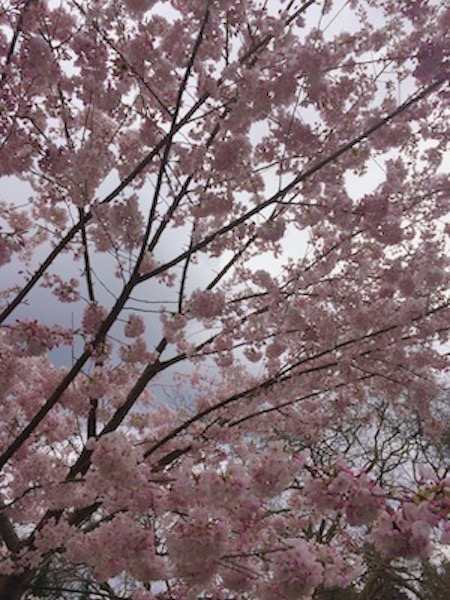

the gallery walk
the digital museum

sakshi harjani
cherry blossom
stanley park, vancouver, canada
april 3, 2018
the photographer was in a park and noticed the spring colors of the trees. she had never seen cherry blossoms and wanted to capture a close-up shot of the leaves. the main focus is the leaves rather than the whole tree because she wanted it to feel a little abstract to any viewer.